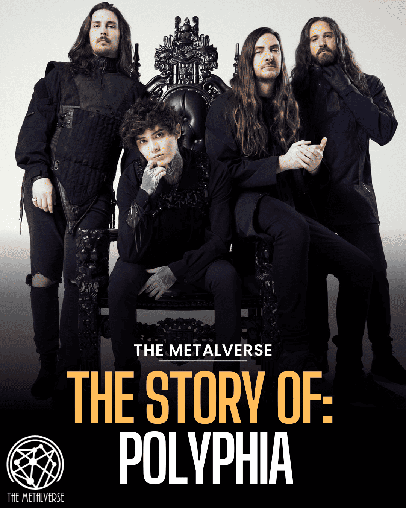
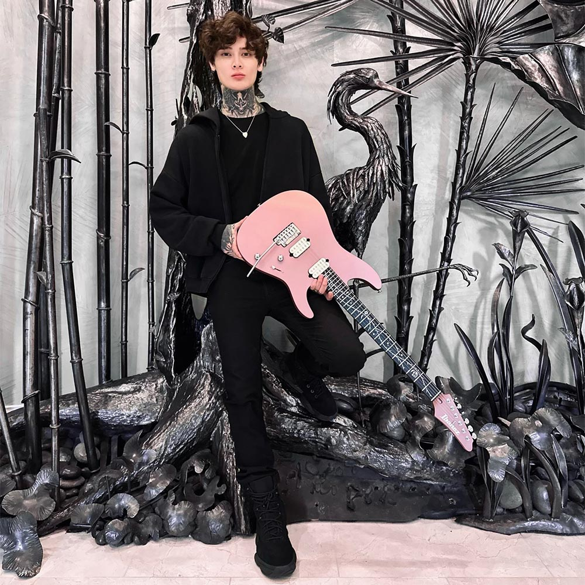
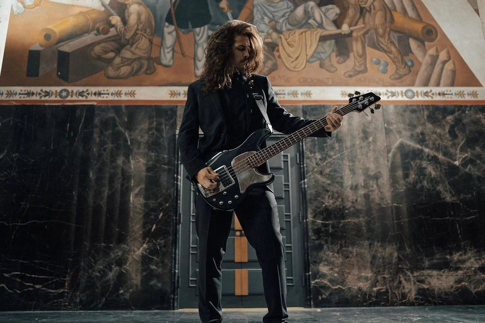
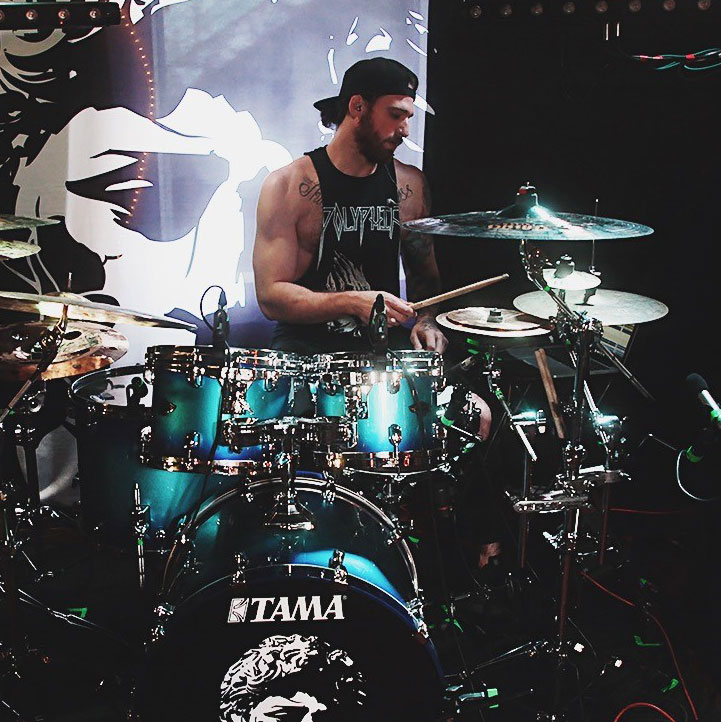
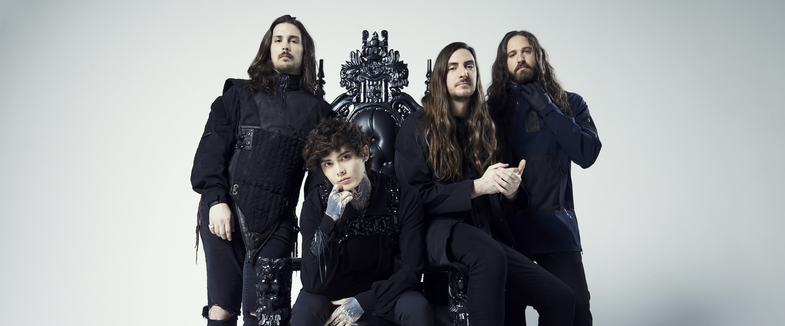

Sejarah Polyphia

Polyphia dibentuk pada tahun 2010 dan pertama kali mencapai kesuksesan mainstream setelah permainan gitar "Impassion", dari EP mereka Inspire, menjadi viral di YouTube.
Sejak itu, popularitas band ini semakin meningkat dan mereka berbagi panggung dengan artis metalcore progresif seperti Periphery, Between the Buried and Me dan August Burns Red
Nama band ini berasal dari kata "polifoni", artinya musik yang teksturnya ditentukan oleh jalinan beberapa baris melodi.
Polyphia awalnya dikenal dengan cover gitar lagu-lagu klasik di YouTube. EP pertama mereka, Inspire , dan LP pertama, Muse menggunakan lebih banyak pengaruh metal progresif daripada rilisan mereka selanjutnya.
Hal ini menghubungkan mereka dengan gerakan djent, meskipun karakteristiknya tidak terlalu berat dan lebih berbasis melodi dibandingkan rekan-rekan mereka.
Pada bulan September 2022, mereka merilis single "Ego Death", lagu keempat dari album terbaru mereka, Remember That You Will Die. Hal ini disertai dengan sebuah video, keduanya menampilkan virtuoso gitar Steve Vai.
Remember That You Will Die dirilis pada 28 Oktober 2022 dan juga menampilkan penampilan Sophia Black, Brasstracks, Snot dan Chino Moreno. Pada bulan Oktober 2022, Polyphia mengumumkan tur Eropa selama 15 hari untuk mendukung rekaman tersebut.
Anggota Polyphia

Formasi Polyphia saat ini terdiri dari penciptaan kekuatan yang kohesif dan inovatif dalam dunia musik instrumental.
Tim Henson

Tim Henson, lahir pada 19 November 1993, adalah salah satu anggota pendiri Polyphia dan berperan sebagai gitaris utama band. Karya gitarnya dicirikan oleh melodi yang rumit, arpeggio yang menyapu, dan berbagai teknik.
Tim dikenal dengan gaya bermainnya yang virtuoso, yang menggabungkan unsur musik progresif metal, jazz, dan elektronik.
Scott LePage
Scott LePage, lahir pada tanggal 9 Mei 1993, adalah anggota duo gitar Polyphia. Dia melengkapi permainan Tim Henson dengan gaya uniknya sendiri, sering kali menggabungkan riff yang berat dan pola ketukan yang rumit.
Bersama-sama, Tim dan Scott menciptakan perpaduan karya gitar yang dinamis dan harmonis yang mendefinisikan suara Polyphia.
Clay Gober

Clay Gober, lahir pada tanggal 18 Maret 1994, adalah bassis Polyphia, yang menjadi fondasi band low-end. Garis bassnya asyik dan menuntut secara teknis, menambah kedalaman dan kompleksitas pada musik band.
Kontribusi Clay sangat penting dalam menciptakan lanskap sonik band secara keseluruhan.
Clay Aeschliman

Clay Aeschliman, lahir pada tanggal 28 November 1988, menangani tugas drum di Polyphia. Permainan drumnya dicirikan oleh presisi, kecepatan, dan beragam ritme yang melengkapi karya gitar dan bass yang rumit.
Kemampuannya untuk beralih dengan mulus antara tanda birama dan alur yang berbeda menambah lapisan kompleksitas pada komposisi band.
Kesimpulan

Polyphia adalah band rock instrumental terkenal yang terkenal dengan perpaduan unik antara musik yang digerakkan oleh gitar, perpaduan unsur metal, rock, dan berbagai genre lainnya.
Band ini memiliki mantan anggota terkenal yang berkontribusi pada sejarah awal mereka, menambahkan lapisan pada perjalanan musik mereka yang terus berkembang.
Perpaduan antara kecakapan teknis dan bakat kreatif Polyphia telah menjadikan mereka lebih dari sekadar band rock, memperkuat tempat mereka di kancah musik instrumental